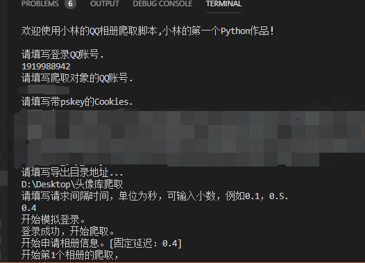

原文出处:本文由博客园博主风陵提供。
原文连接:https://www.cnblogs.com/lingqingxue/p/11306575.html
原文连接:https://www.cnblogs.com/lingqingxue/p/11306575.html
前言
昨天看见某人的空间有上传了XXXX个头像，然后我就想着下载回来【所以本质上这是一个头像下载程序】，但是一个个另存为太浪费时间了，上网搜索有没有现成的工具，居然要注册码，还卖45一套。你们的良心也太坏了！。而且居然！！！还有一个和我同名的下载器？这一点实在让我十分的嫉恨。于是我下决心搞清楚这个东西，然而大部分资料都是Python源码，并且很多都是过期的且无法使用的了[反正我是没找到一个能用]。
好在有很多人在网上发过一些教程，虽然Python是第一次接触[差不多一天的时间]，但它是实在让我惊讶。这个语言太简单，太简洁了！你很容易就能明白。就这样从这些断断续续的代码和教程中，一边了解语法，一边找代码，调试了一天。写出了这个程序。
1.准备需要的东西
python3.0，下面这些引用的模块

import sys
import re
import os
import requests
import execjs
import time
from goto import with_goto #添加于19.8.6 https://github.com/snoack/python-goto
以及：
一个能够登录并开通了QQ空间的QQ账号和密码。
要爬取空间相册对象的QQ账号。
一个能成功登录QQ空间，并且带有pskey参数的Cookies。
1.2 抓取Cookies
一开始我也是看着教程去找的，最后发现，Chrome[版本 76.0.3809.87（正式版本） （64 位）]根本就抓不到。接下来我还是得用一个经典的工具。
步骤：打开fiddler ，打开浏览器，访问登录你的账号，在拦截的列表中找到右侧栏中Cookies里带pskey参数，右键菜单选择查看标头将它复制，替换py文件中的Cookies参数。
（图为fiddler的拦截信息）
（图为查看标头对话框）
2.0 替换代码 [在新的脚本已放弃。]
设置准备登录的QQ号码【与Cookies对应】
设置将准备的爬取对象QQ号码
设置好抓取的cookies
设置好time_sleep的时间【安全性考虑[过快会导致远程主机中断连接，然后出些奇怪的异常。]】
在新的脚本里，你将通过Input输入需要的数据来得到参数。
2.1 执行代码
在安装完需求模块与准备好一切之后，将它保存，在PowerShell or cmd命令行中启动。 程序在爬取完相册链接后会执行Input,
填入指定目录，将输出链接.txt文件到该目录。【这时的文本文件里是未转义的JS代码[这正是我要的。]，你可以写一个转义工具将 \/ 手动转义，例如下面给出的代码：】
'\Code for vb6
'\e-mail: 1919988942@qq.com
Dim url() As String
Public Function url_format(stra As String) As String
'由于可能需要转义的url代码行超出Integr(32...)级别,启用long更稳妥
Dim strb() As String
Dim i As Long
url_format = ""
strb = Split(stra, "\")
For i = 0 To UBound(strb)
If strb(i) <> "/" Then
url_format = url_format + strb(i)
End If
Next
End Function
Public Sub main()
Dim i As Long
Open App.Path & "\ling_url.txt" For Input As #1
Do Until EOF(1)
ReDim Preserve url(i)
Line Input #1, url(i)
url(i) = url_format(url(i))
i = i + 1
Loop
Close #1
Open App.Path & "\ling_Val_url.txt" For Output As #2
For i = 0 To UBound(url())
Print #2, url(i)
Next
Close #2
End Sub
执行代码结果(示例)：

（2019/8/6 10：40更新。）
3.代码分析：
（2019/8/7.2：00 先睡了。）
（2019/8/6 14：30。）
#Python : 小林的QQ空间相册下载链接爬取脚本
# -*- coding: utf-8 -*-
import sys
import re
import os
import requests
import execjs
import time
from goto import with_goto #添加于19.8.6
#cookie 需要有p_skey参数
global cookie #pgv_pvi=7315500032; pgv_pvid=288873475; ptui_loginuin=1919988942; RK=YoxQKU3NQ7; ptcz=5d6856f2fff94194ae900a4ee204a2528654c81e39c9c812977ab125cfcaecdf; qz_screen=1920x1080; QZ_FE_WEBP_SUPPORT=1; __Q_w_s__QZN_TodoMsgCnt=1; _tucao_session=ZEVTWlB3S1JWR0VkQjgzVTM5YUQzMzFwYUJRNm5xVk5GQUpWUStPNDNRWW9uQ0JFNlp2bkdjRWFqZ2pVVUhIU05VUGJ5QUpRNCtIR1FUSEhtSCt2M3luanFabTlua05LWmUxR2RJMWlMQlE9--2TItPIzlBB2dEb4ZW7UPXQ%3D%3D; pgv_si=s1334556672; _qpsvr_localtk=0.4684345944820856; ptisp=ctc; pgv_info=ssid=s6272865000; 1919988942_todaycount=0; 1919988942_totalcount=3081; cpu_performance_v8=5; uin=o1919988942; skey=@EgVMVB3lC; p_uin=o1919988942; pt4_token=RsZjbes01h79ehRaXRxZVG3VFtky4*P2udV4tx51XiY_; p_skey=1H*iJGgv*7-Gg-O5reZ7ZtixgWkziuu0a596lUmeU1I_; x-stgw-ssl-info=2d4aa1681cad595b93c934eab2ed891a|0.166|1565046557.661|5|r|I|TLSv1.2|ECDHE-RSA-AES128-GCM-SHA256|57000|N|0"
global uin #1919988942"
global fuin #2757145758"
global time_sleep #2 #安全性考虑
fail='对不起，您尚未登录或者登录超时。'
#返回合法的文件夹名称(如果你使用的是除中文外定义的名称，请手动修改正则表达式。)
def mkName_Legalization(Strname):
strvalue = Strname
strvalue = re.sub(r'[^a-zA-Z0-9(\u4e00-\u9fa5)]+',' ',strvalue)#仅保留数字A-Za-z中文字符
return strvalue.strip()#去掉头尾空格
#返回Http消息
def getHttp(url,cookie):
Goyes= True
while Goyes :
try:
headers = {'Referer': 'https://qzs.qq.com/qzone/photo/v7/page/photo.html?init=photo.v7/module/albumList/index&navBar=1',
'User-Agent': 'Mozilla/5.0 (X11; Linux x86_64; rv:38.0) Gecko/20100101 Firefox/38.0 Iceweasel/38.3.0',
'Accept': 'text/html,application/xhtml+xml,application/xml;q=0.9,*/*;q=0.8',
'cookie':cookie
}
s = requests.session()
Goyes = False
return s.get(url, headers=headers).content
except requests.exceptions.Timeout:
print('访问超时，将自动重连。')
except requests.exceptions.ConnectionError:
print('连接错误，将自动重连。')
#返回列表所有字符串
def getlist(urllist):
strA = ""
for i in urllist:
strA = strA + str(i) + "\r\n"
return strA
@with_goto
def main():
print("欢迎使用小林的QQ相册爬取脚本,小林的第一个Python作品！\r\n")
uin = input("请填写登录QQ账号. \r\n")
fuin = input("请填写爬取对象的QQ账号. \r\n")
cookie = input("请填写带pskey的Cookies. \r\n")
fileName = input("请填写导出目录地址...\r\n")
time_sleep = float(input("请填写请求间隔时间，单位为秒，可输入小数，例如0.1，0.5. \r\n"))
print("开始模拟登录。")
t = execjs.compile("function time(){return String(Math.random().toFixed(16)).slice(-9).replace(/^0/, '9')}").call(
'time')
gtk_t = 'function a(skey){var hash = 5381;for (var i = 0, len = skey.length;i < len;++i) {hash += (hash << 5) + skey.charCodeAt(i);}return hash & 2147483647;}'
qq = cookie.split("p_skey=")[1].split(";")[0]
gtk = execjs.compile(gtk_t).call('a', qq) # .replace("p_skey=(.*?);"))
label .getrepeat
json_qq = getHttp(
"https://h5.qzone.qq.com/proxy/domain/photo.qzone.qq.com/fcgi-bin/fcg_list_album_v3?g_tk={0}&callback=shine0_Callback&t={1}&hostUin={2}&uin={3}&appid=4&inCharset=utf-8&outCharset=utf-8&source=qzone&plat=qzone&format=jsonp¬ice=0&filter=1&handset=4&pageNumModeSort=40&pageNumModeClass=15&needUserInfo=1&idcNum=4&callbackFun=shine0&_=1516544656243".format(
gtk, t, fuin, uin),cookie)
if (json_qq == None):
goto .getrepeat
json_qq = str(json_qq,encoding='utf-8')
if (json_qq != ""):
state = re.findall(r'"message":"(.*?)",', json_qq)
#登陆失败
if (state[0] != fail):
print("登录成功，开始爬取。")
json_text = json_qq.replace("shine0_Callback(", "").replace(");", "")
url_id = re.findall(r'"id" : "(.*?)",', json_text) #获取相册列表
url_str = ""
url_name = re.findall(r'"name" : "(.*?)",', json_text) #获取相册名称
total = re.findall(r'"total" : (.*?),', json_text) #获取相册照片数量
url_Index = 0 #当前页数
url_Count = 0
url_text = [] #JSON数据
#为了安全性我选择了导出链接和下载链接两步分开 [也就是这部分不包括下载]
print("开始申请相册信息。[固定延迟："+str(time_sleep)+"]")
url_Count = 0#
url_Start =[] #相册列表中的起点
url_Over = [] #相册列表中的终点
for x in url_id:
# 由于限制每次最多只能申请500张
#range（0，toatl,501) =》 for(i= 0; i<=total;i+=501)
print("开始第"+ str(url_Index + 1) + "个相册的爬取，")
print('name:' + url_name[url_Index])
url_Start.append(url_Count)#记录开始的列表索引
url_forcount = int(int(total[url_Index]) / 500) + 1 #计算要多少次才能遍历这个相册
for i in range(0, url_forcount, 1):
text = "" #防止接收失敗無法驗證
label .begin
url_q = "https://h5.qzone.qq.com/proxy/domain/photo.qzone.qq.com/fcgi-bin/cgi_list_photo?g_tk={0}&callback=shine0_Callback&t={1}&mode=0&idcNum=4&hostUin={2}&topicId={4}&noTopic=0&uin={3}&pageStart={6}&pageNum={5}&skipCmtCount=0&singleurl=1&batchId=¬ice=0&appid=4&inCharset=utf-8&outCharset=utf-8&source=qzone&plat=qzone&outstyle=json&format=jsonp&json_esc=1&question=&answer=&callbackFun=shine0&_=1516549331973".format(
gtk, t, fuin, uin, x,500,i*500+1) # g_tk,t,fuin,uin,url_id,pagesnum,pagesstart
text = getHttp(url_q,cookie)
if (text == None):
goto .begin
state = str(text,encoding='utf-8') #验证状态
if(state == ''):
print("返回异常。将自动重复该序号的循环。")
goto .begin
time.sleep(time_sleep)
url_text.append(text) #获取返回到列表
url_Count = url_Count + 1
print("当前进度：" + str(i+1) + "/" + str(url_forcount))
print("\r\n" + '完成了第'+ str(url_Index + 1) + '个相册.')
url_Index = url_Index + 1 # 自增 循坏继续
url_Over.append(url_Count)#记录结束的列表索引
print("QQzone所有在线记录操作结束。")
print("开始导出链接...")
#x = url_Getpaget[0] to url_GetPage[Ubound(me)] x=>第x + 1个相册
url_Index = 0
for x in range(0,len(total),1):
#mkNameL... ->返回合法的文件夹名称(如果你使用的是除中文外定义的名称，请手动修改正则表达式。)
url_str = "" #刷新
path = fileName + '\\qzone' + '\\' + mkName_Legalization(url_name[x]) + '\\'#输出路径
mkdir(path)#创建目标
f = open( path + mkName_Legalization(url_name[x]) + '_download.txt', 'wb+')#打开/创建
url_str = url_str + "<小林的分隔符——————" + mkName_Legalization(url_name[x]) + "——————Start>"+"\r\n" #添加相册记载开始信息
for i in range(url_Start[x],url_Over[x],1):
url_Download = re.findall(r'"url" : "(.*?)",', url_text[i].decode('utf-8'))#返回真实下载地址
url_str = url_str + getlist(url_Download) #添加该相册所有真实链接地址
print("\r\n"+ '完成了第'+str(x + 1)+'个相册的下载信息。')
url_str = url_str + "<小林的分隔符——————" + mkName_Legalization(url_name[x]) + "——————End>"+"\r\n" #添加相册记载结束信息
f.write(bytes(url_str,'UTF-8'))
f.close
print("下载开始？")
Download_Bool = input("Y/N ：")
#你可以在这之后添加下载的代码，但我的主要目的并不是这个。
print(fail)
print("程序结束")
#程序走到这一步就Goodbay了。
# mkdir函数引用来源：https://www.cnblogs.com/monsteryang/p/6574550.html
def mkdir(path):
# 去除首位空格
path=path.strip()
# 去除尾部 \ 符号
path=path.rstrip("\\")
# 判断路径是否存在
# 存在 True
# 不存在 False
isExists=os.path.exists(path)
# 判断结果
if not isExists:
os.makedirs(path)
print(path+' 创建成功')
return True
else:
print(path+' 目录已存在')
return False
# 入口
if __name__ == "__main__":
main()